Capítulo 20 Distribuições de probabilidade
No capítulo anterior vimos que simular consiste, no essencial, em gerar variáveis aleatórias com a distribuição certa. Chega, por isso, o momento de conhecer as distribuições de probabilidade mais importantes e as funções que o R lhes dedica. Cada uma modela um tipo de fenómeno — contagens, tempos de espera, medições — e para cada uma o R oferece, de forma sistemática, quatro funções.
O R inclui as distribuições univariadas mais comuns. Para cada distribuição existem quatro funções, distinguidas por uma letra inicial:
| Função | O que devolve |
|---|---|
dnome(…) |
a função de probabilidade (discreta) ou densidade (contínua) |
pnome(…) |
a função de distribuição, \(F(x) = P(X \leq x)\) |
qnome(…) |
o quantil correspondente a uma dada probabilidade (o inverso de p) |
rnome(…) |
uma amostra aleatória da distribuição |
O nome é a abreviatura da distribuição: binom, geom, pois, unif, exp,
norm, e assim por diante.
Vale a pena fixar esta lógica de quatro letras, porque se aplica a todas as
distribuições do R. Se sabe usar dnorm, pnorm, qnorm e rnorm, sabe usar as
funções de qualquer outra distribuição — muda apenas a raiz do nome e, eventualmente,
os parâmetros. É uma das grandes comodidades da linguagem.
Neste capítulo percorremos as principais distribuições — uniforme, Bernoulli, binomial,
geométrica, Poisson (discretas), uniforme, exponencial e normal (contínuas) —, vendo
para cada uma a definição, o valor esperado e a variância, o cálculo de probabilidades
com d/p/q e a geração de amostras com r, comparando sempre a teoria com a
simulação.
20.1 Primeiros exemplos
Exemplo 1 (lançar três moedas). Simulemos o lançamento de três moedas equilibradas e a contagem do número de caras, \(X\). Queremos estimar \(P(X = 1)\) e \(E(X)\); e depois repetir para uma moeda enviesada com \(P(\text{cara}) = 3/4\).
set.seed(123)
n <- 10000
sim1 <- numeric(n) # indicador de "saiu exatamente 1 cara"
sim2 <- numeric(n) # número de caras
for (i in 1:n) {
moedas <- sample(0:1, 3, replace = TRUE)
sim1[i] <- if (sum(moedas) == 1) 1 else 0
sim2[i] <- sum(moedas)
}
mean(sim1) # estimativa de P(X = 1)
## [1] 0.3821
mean(sim2) # estimativa de E(X)
## [1] 1.4928Para a moeda enviesada, basta indicar as probabilidades em sample():
set.seed(123)
n <- 10000
sim1 <- numeric(n)
sim2 <- numeric(n)
for (i in 1:n) {
moedas <- sample(c(0, 1), 3, prob = c(1/4, 3/4), replace = TRUE)
sim1[i] <- if (sum(moedas) == 1) 1 else 0
sim2[i] <- sum(moedas)
}
mean(sim1)
## [1] 0.1384
mean(sim2)
## [1] 2.2503Mas o número de caras em três lançamentos é, por definição, uma
\(\text{Binomial}(n = 3, p)\). Podemos, por isso, gerar as observações diretamente com
rbinom(), sem o ciclo:
set.seed(123)
valores <- rbinom(10000, size = 3, prob = 0.5)
sum(valores == 1) / length(valores) # P(X = 1)
## [1] 0.383
mean(valores) # E(X)
## [1] 1.4897E, para a moeda enviesada, com \(X \sim \text{Binomial}(3, 3/4)\):
set.seed(123)
valores <- rbinom(10000, size = 3, prob = 3/4)
sum(valores == 1) / length(valores)
## [1] 0.1365
mean(valores)
## [1] 2.2558Exemplo 2 (tempo até ao autocarro). O tempo até à chegada de um autocarro segue uma
distribuição exponencial de média 30 minutos. Estimemos por simulação a probabilidade
de o autocarro chegar nos primeiros 20 minutos e comparemos com o valor exato dado por
pexp():
set.seed(123)
valores <- rexp(10000, rate = 1/30)
sum(valores < 20) / length(valores) # estimativa de P(X < 20)
## [1] 0.4832
pexp(20, rate = 1/30) # valor exato
## [1] 0.4865829Exemplo 3 (cartas até ao primeiro ás). Retiram-se cartas de um baralho, com reposição, até sair um ás. Simulemos a média e a variância do número de cartas necessárias:
set.seed(123)
n <- 10000
simlist <- numeric(n)
for (i in 1:n) {
ct <- 0
as <- 0
while (as == 0) {
carta <- sample(1:52, 1, replace = TRUE) # ases: 1, 2, 3, 4
ct <- ct + 1
if (carta <= 4) as <- 1
}
simlist[i] <- ct
}
mean(simlist)
## [1] 12.8081
var(simlist)
## [1] 147.5318O número de provas de Bernoulli até ao primeiro sucesso (aparecer um ás, com \(p = 4/52\)) segue uma distribuição geométrica. Como veremos, o R conta os insucessos até ao primeiro sucesso, pelo que somamos 1 para obter o número de cartas:
20.2 Função de distribuição empírica
A função de distribuição empírica é a função de distribuição construída a partir dos dados observados: para cada valor \(x\), dá a proporção de observações da amostra que são menores ou iguais a \(x\). É uma ferramenta natural para visualizar uma distribuição amostral e compará-la com um modelo teórico.
Formalmente, para uma amostra de dimensão \(n\), \[F_n(x) = \frac{1}{n} \sum_{i=1}^n \mathbb{I}(X_i \leq x),\] onde \(\mathbb{I}(X_i \leq x)\) é a função indicadora, que vale 1 se \(X_i \leq x\) e 0 caso contrário. Ordenando os dados por ordem crescente, \(x_{(1)} \leq \cdots \leq x_{(n)}\), a função é uma escada que vale 0 antes de \(x_{(1)}\), sobe \(\frac{1}{n}\) em cada observação (ou \(\frac{k}{n}\) se um valor se repetir \(k\) vezes) e chega a 1 em \(x_{(n)}\).
20.2.1 A função ecdf()
No R, a função de distribuição empírica calcula-se com ecdf():
dados <- c(3, 1, 4, 1, 5, 9, 2, 6, 5, 3, 5)
Fn <- ecdf(dados) # cria a função de distribuição empírica
plot(Fn, main = "Função de distribuição empírica",
xlab = "x", ylab = "Fn(x)", col = "blue", lwd = 2)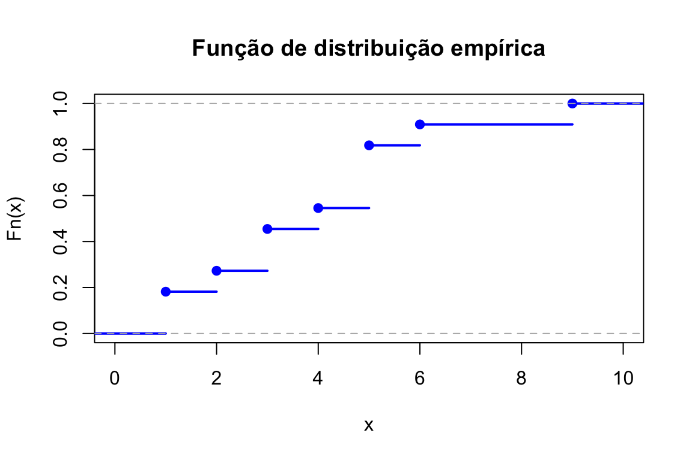
Figura 20.1: Função de distribuição empírica de um pequeno conjunto de dados.
O objeto devolvido por ecdf() é, ele próprio, uma função: Fn(20) devolve a proporção
de observações \(\leq 20\). Retomando o Exemplo 2, podemos estimar \(P(X \leq 20)\) e
compará-la com o valor exato:
20.3 Modelos discretos
Um modelo probabilístico discreto descreve fenómenos em que a variável aleatória assume apenas valores isolados — num conjunto finito ou numerável — e especifica a probabilidade de cada um. Vejamos os principais.
20.4 Distribuição uniforme discreta
Definição. A variável aleatória \(X\) tem distribuição uniforme discreta no conjunto \(\{x_1, x_2, \ldots, x_n\}\) se todos os valores forem igualmente prováveis: \[P(X = x) = \begin{cases} \frac{1}{n}, & x \in \{x_1, \ldots, x_n\} \\ 0, & \text{caso contrário} \end{cases}\]
Notação e momentos. \(X \sim \text{Uniforme Discreta}(\{x_1, \ldots, x_n\})\), com \[E(X) = \frac{1}{n}\sum_{i=1}^n x_i, \qquad V(X) = \frac{1}{n}\sum_{i=1}^n x_i^2 - \left(\frac{1}{n}\sum_{i=1}^n x_i\right)^2.\]
No caso particular, muito comum, em que os valores são os inteiros consecutivos \(\{1, 2, \ldots, n\}\), estas fórmulas simplificam-se para \[E(X) = \frac{n+1}{2}, \qquad V(X) = \frac{n^2 - 1}{12}.\] Atenção, porém: estas versões simplificadas só valem para \(\{1, \ldots, n\}\). Para um conjunto qualquer de valores, há que usar as fórmulas gerais acima.
O R não tem uma função dedicada a esta distribuição — dada a sua simplicidade —, mas a
sample() gera-a diretamente. Por exemplo, 15 valores de uma uniforme discreta em
\(\{1, \ldots, 10\}\):
sample(1:10, size = 15, replace = TRUE)
## [1] 2 3 4 4 4 5 7 9 4 2 6 7 1 6 920.4.1 Exercícios
1. Crie uma variável aleatória uniforme discreta \(X\) com valores de 1 a 10.
- Simule 1000 realizações de \(X\).
- Verifique se a frequência relativa de cada valor se aproxima da probabilidade teórica \(P(X = x) = \frac{1}{10}\).
- Represente os resultados num gráfico de barras.
2. Defina \(X\) uniforme discreta com valores de 5 a 15.
- Calcule \(E(X)\) e \(V(X)\).
- Simule 10 000 realizações e compare a média e a variância empíricas com as teóricas.
3. Considere duas variáveis uniformes discretas independentes \(X\) e \(Y\), com valores de 1 a 6 (um par de dados).
- Gere 5000 pares \((X, Y)\).
- Calcule a média e a variância da soma \(Z = X + Y\).
- Estime \(P(Z > 8)\).
4. Defina \(X\) uniforme discreta com valores de \(-3\) a 3.
- Crie a variável \(Y = X^2 + 2X\).
- Simule 5000 valores de \(X\) e calcule \(E(Y)\) e \(V(Y)\).
5. Defina \(X\) uniforme discreta com valores de \(-5\) a 5.
- Crie \(Y = 3X^3 - 2X^2 + X\).
- Simule 5000 valores de \(X\) e calcule a média empírica de \(Y\) e a proporção de valores de \(Y\) positivos.
20.5 Distribuição de Bernoulli
Prova de Bernoulli. Uma experiência diz-se uma prova de Bernoulli se tiver apenas dois resultados: um sucesso, com probabilidade \(p\) (\(0 \leq p \leq 1\)), e um insucesso, com probabilidade \(1 - p\). Lançar uma moeda, verificar se uma peça é defeituosa ou se uma perfuração encontra petróleo são exemplos típicos.
Definição. A variável \(X\) que conta o número de sucessos numa prova de Bernoulli tem distribuição de Bernoulli de parâmetro \(p\), com f.m.p. \[P(X = x) = p^x (1-p)^{1-x}, \quad x \in \{0, 1\}.\]
Notação e momentos. \(X \sim \text{Bernoulli}(p)\), com \(E(X) = p\) e \(V(X) = p(1-p)\).
20.5.1 Cálculo de probabilidades
A Bernoulli é o caso \(n = 1\) da binomial, pelo que se usam as funções *binom com
size = 1. Seja \(X \sim \text{Bernoulli}(p = 0{,}5)\):
-
\(P(X = 0) \to\)
dbinom(0, size = 1, prob = 0.5)\(= 0{,}5\) -
\(P(X = 1) \to\)
dbinom(1, size = 1, prob = 0.5)\(= 0{,}5\) -
\(P(X \leq 1) \to\)
pbinom(1, size = 1, prob = 0.5)\(= 1\) -
\(P(X > 0) \to\)
pbinom(0, size = 1, prob = 0.5, lower.tail = FALSE)\(= 0{,}5\) - amostra de dimensão 5 \(\to\)
rbinom(5, size = 1, prob = 0.5)
20.5.2 Exercícios
1. Considere o lançamento de uma moeda equilibrada e a variável $X = $ “número de caras em 1 lançamento”.
- Simule a experiência, determinando a percentagem de caras para \(n_1 = 5\), \(n_2 = 10\), \(n_3 = 100\) e \(n_4 = 1000\) lançamentos.
- Para cada amostra, calcule a média e a variância e compare com \(E(X)\) e \(V(X)\).
2. Seja \(X \sim \text{Bernoulli}\) com \(P(X = 1) = 0{,}7\).
- Simule 1000 valores de \(X\).
- Calcule a frequência relativa de \(X = 1\) e \(X = 0\) e compare com as probabilidades teóricas.
3. Defina \(X \sim \text{Bernoulli}\) com \(P(X = 1) = 0{,}4\).
- Simule 10 000 valores.
- Compare a média empírica com \(E(X) = p\) e a variância empírica com \(V(X) = p(1-p)\).
4. Considere 5 variáveis \(X_1, \ldots, X_5\), cada uma Bernoulli com \(p = 0{,}5\).
- Simule 5000 realizações de cada.
- Calcule a soma \(S = X_1 + \cdots + X_5\).
- Compare a frequência relativa de cada valor de \(S\) (de 0 a 5) com a binomial teórica,
dbinom(0:5, size = 5, prob = 0.5).
20.6 Distribuição binomial
Definição. A variável \(X\) que conta o número de sucessos em \(n\) provas de Bernoulli
independentes, todas com probabilidade de sucesso \(p\), tem distribuição binomial de
parâmetros \((n, p)\), com f.m.p.
\[P(X = x) = \binom{n}{x} p^x (1-p)^{n-x}, \quad x = 0, 1, \ldots, n,\]
onde \(\binom{n}{x} = \dfrac{n!}{x!\,(n-x)!}\) é o número de combinações (em R, choose(n, x)).
Notação e momentos. \(X \sim \text{Binomial}(n, p)\), com \(E(X) = np\) e \(V(X) = np(1-p)\).
20.6.1 Cálculo de probabilidades
Seja \(X \sim \text{Binomial}(n = 20, p = 0{,}1)\):
-
\(P(X = 4) \to\)
dbinom(4, size = 20, prob = 0.1)\(= 0{,}0898\) -
\(P(X \leq 4) \to\)
pbinom(4, size = 20, prob = 0.1)\(= 0{,}9568\) -
\(P(X > 4) \to\)
pbinom(4, size = 20, prob = 0.1, lower.tail = FALSE)\(= 0{,}0432\) - amostra de dimensão 5 \(\to\)
rbinom(5, size = 20, prob = 0.1)
20.6.2 Função massa de probabilidade (teórica)
n <- 20; p <- 0.1
x <- 0:20
teorico <- data.frame(x = x, y = dbinom(x, size = n, prob = p))
plot(teorico$x, teorico$y,
main = "Binomial(n = 20, p = 0.1)",
xlab = "Número de sucessos", ylab = "Probabilidade",
pch = 19, col = "blue")
grid(nx = 21, ny = NULL)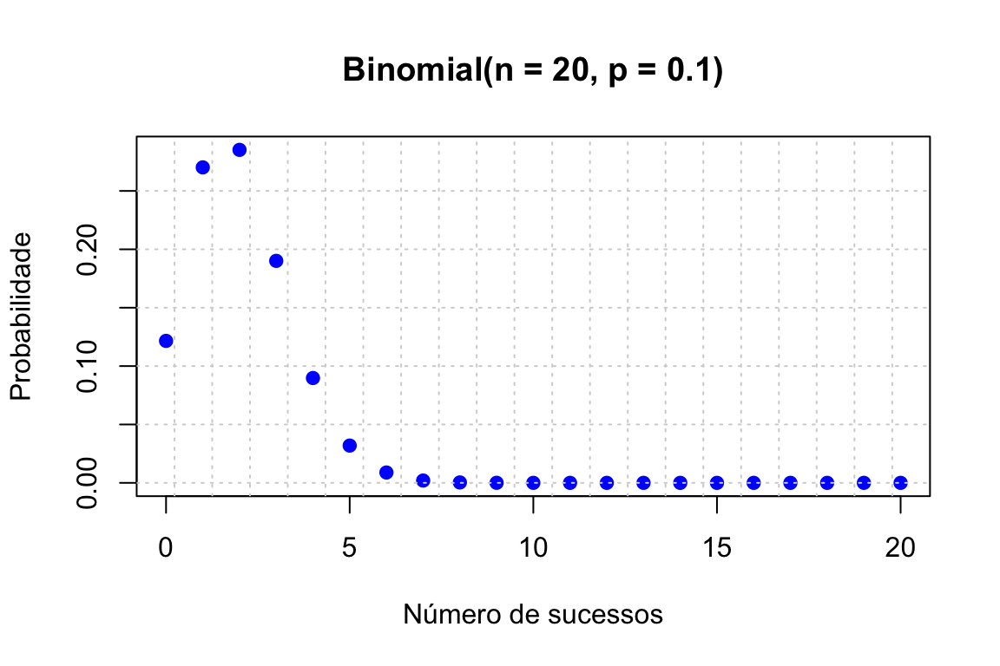
Figura 20.2: Função massa de probabilidade da Binomial(20, 0.1).
20.6.3 Função massa de probabilidade (simulação)
set.seed(1234)
n <- 20; p <- 0.1; k <- 1000 # k = número de simulações
dados <- rbinom(k, size = n, prob = p)
frequencia_relativa <- table(dados) / length(dados)
barplot(frequencia_relativa,
main = "Amostra da Binomial(20, 0.1)",
col = "lightblue",
xlab = "Número de sucessos", ylab = "Frequência relativa",
ylim = c(0, 0.3))
grid()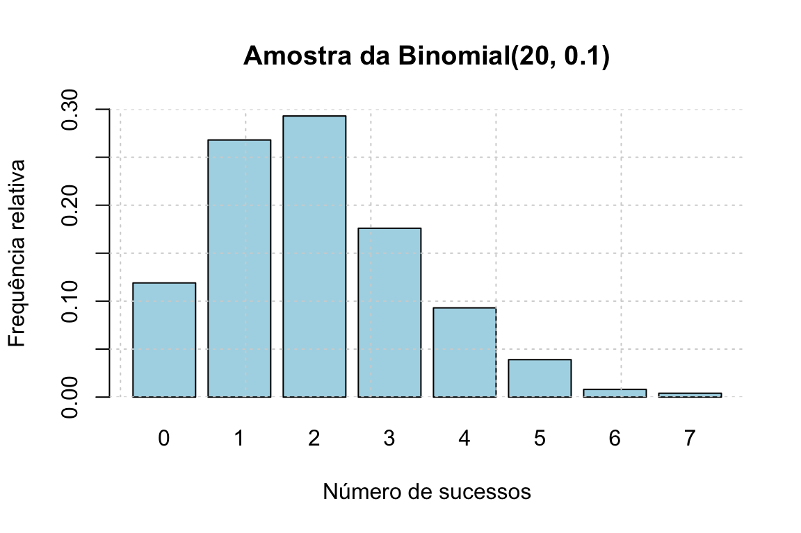
Figura 20.3: Frequências relativas de uma amostra de 1000 valores da Binomial(20, 0.1).
20.6.4 Comparação entre teoria e simulação
set.seed(1234)
n <- 20; p <- 0.1; k <- 1000
dados <- rbinom(k, size = n, prob = p)
frequencia_relativa <- table(factor(dados, levels = 0:n)) / length(dados)
teorico <- data.frame(x = 0:n, y = dbinom(0:n, size = n, prob = p))
posicoes_barra <- barplot(frequencia_relativa,
main = "Amostra da Binomial(20, 0.1)",
col = "lightblue",
xlab = "Número de sucessos", ylab = "Frequência relativa",
ylim = c(-0.01, 0.3))
points(posicoes_barra, teorico$y, col = "magenta", pch = 19)
grid()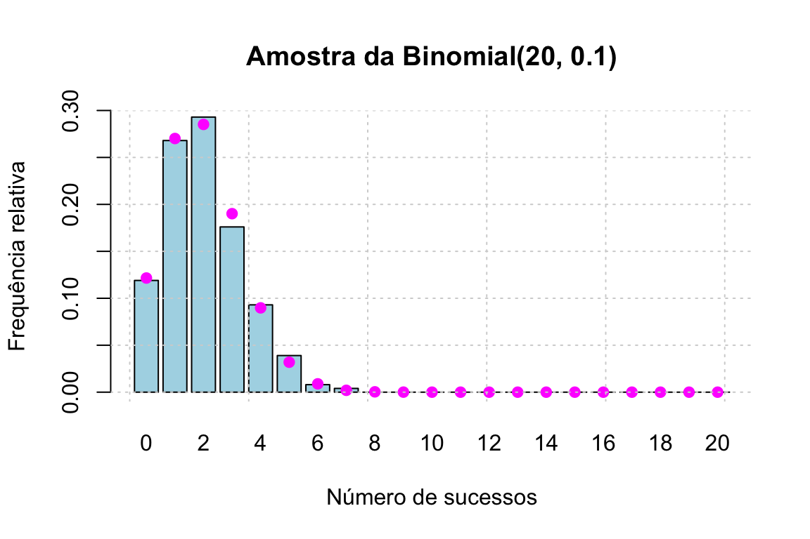
Figura 20.4: Frequências relativas simuladas (barras) e probabilidades teóricas (pontos).
20.6.5 Função de distribuição
n <- 20; p <- 0.1
x <- 0:n
cdf_values <- pbinom(x, size = n, prob = p)
plot(x, cdf_values, type = "s", lwd = 2, col = "blue",
xlab = "Número de sucessos", ylab = "F(x)",
main = "Função de distribuição da Binomial(20, 0.1)")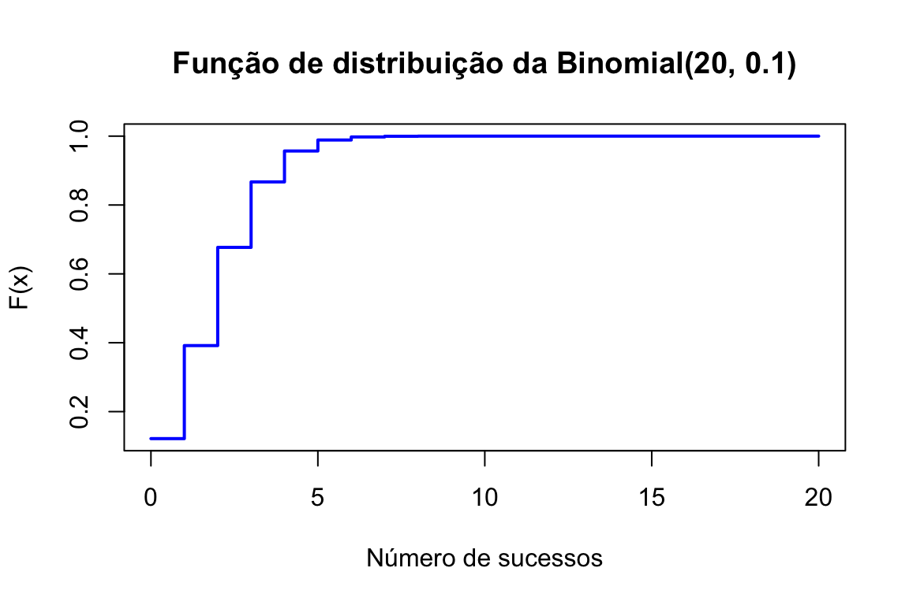
Figura 20.5: Função de distribuição da Binomial(20, 0.1).
20.6.6 Função de distribuição empírica
n <- 20; p <- 0.1
set.seed(1234)
amostra <- rbinom(1000, size = n, prob = p)
Fn <- ecdf(amostra)
plot(Fn, main = "Função de distribuição empírica",
xlab = "x", ylab = "Fn(x)", col = "blue")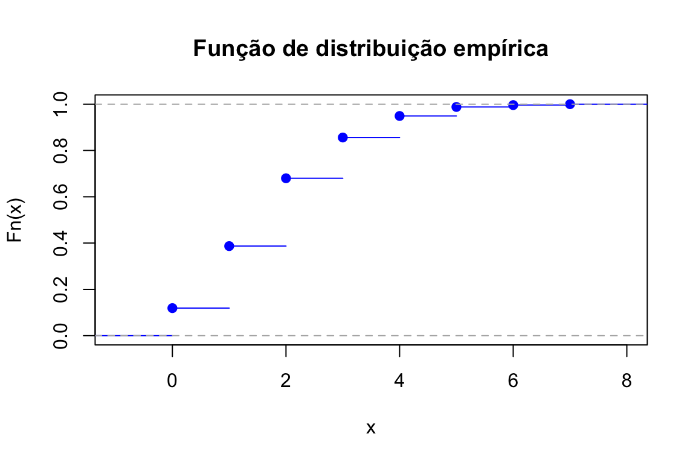
Figura 20.6: Função de distribuição empírica de uma amostra da Binomial(20, 0.1).
Assim, para \(X \sim \text{Binomial}(20, 0{,}1)\), o valor teórico
\(P(X \leq 4) =\) pbinom(4, 20, 0.1) \(= 0{,}9568\) é bem aproximado pela estimativa
empírica Fn(4) \(\approx 0{,}956\).
20.6.7 Exercícios
1. Considere 10 lançamentos de uma moeda equilibrada (\(p = 0{,}5\)).
- Calcule a probabilidade de obter exatamente 6 caras.
- Calcule a probabilidade de obter no máximo 4 caras.
- Calcule a probabilidade de obter mais de 7 caras.
2. Um dado equilibrado é lançado 12 vezes; o sucesso é “sair 6” (\(p = 1/6\)).
- Calcule a probabilidade de, no máximo, cinco 6.
- Gere uma amostra de 1000 experiências e registe o número de sucessos em cada uma.
- Faça um gráfico de barras das frequências relativas e sobreponha a distribuição teórica de \(X\).
- Use a função de distribuição empírica para estimar a probabilidade da alínea (a) e compare com o valor teórico.
- Calcule a média e a variância da amostra.
- Compare com os valores teóricos \(E(X) = np\) e \(V(X) = np(1-p)\).
3. Considere $X = $ “número de caras em 7 lançamentos” de uma moeda equilibrada.
- Calcule a probabilidade de sair 2 vezes cara.
- Simule a experiência para \(n_1 = 5\), \(n_2 = 10\), \(n_3 = 100\) e \(n_4 = 1000\) repetições; para cada caso, determine a percentagem de vezes em que saíram 3 caras.
- Para cada amostra, calcule a média e a variância e compare com \(E(X)\) e \(V(X)\).
4. Um teste de escolha múltipla tem 10 questões, cada uma com 4 alternativas e apenas uma correta (\(p = 0{,}25\)).
- Calcule a probabilidade de acertar exatamente \(k\) questões, para \(k = 0, \ldots, 10\).
- Represente graficamente a distribuição de probabilidades.
- Identifique o valor de \(k\) mais provável.
5. Uma equipa de basquetebol acerta cada lance livre com probabilidade 0,6 e tenta 15 lances num jogo.
- Calcule a probabilidade de acertar exatamente 9.
- Calcule a probabilidade de acertar entre 8 e 12 (inclusive).
- Gere 500 jogos e estime a proporção em que a equipa acerta entre 8 e 12.
6. Num processo de fabrico, \(X\) é o número de peças defeituosas num lote de 40, com \(p = 0{,}05\) de uma peça ser defeituosa.
- Com
set.seed(123), gere 10 000 observações de \(X\). - Conte os lotes com exatamente 2 peças defeituosas.
- Compare a proporção correspondente com \(P(X = 2)\) para \(X \sim \text{Binomial}(40, 0{,}05)\).
7. Numa loja, cada cliente compra com probabilidade \(p = 0{,}3\); entram 25 clientes. Seja \(X\) o número de compradores.
- Com
set.seed(456), gere 5000 observações de \(X\). - Conte os períodos com pelo menos 10 compradores.
- Compare a proporção com \(P(X \geq 10)\) para \(X \sim \text{Binomial}(25, 0{,}3)\).
- Use a função de distribuição empírica para estimar essa probabilidade e compare.
- Calcule o número médio de compradores na amostra.
- Compare a média amostral com \(E(X)\).
8. O número de acertos num alvo em 30 tentativas, com probabilidade de acerto 0,4, é
\(X \sim \text{Binomial}(30, 0{,}4)\). Com set.seed(123), gere uma amostra de dimensão
700.
- Faça um gráfico de barras das frequências relativas e sobreponha a distribuição teórica de \(X\).
- Com a função de distribuição empírica, estime \(P(X > 15)\) e calcule também o valor teórico.
20.7 Distribuição geométrica
Definição. A variável $X = $ “número de provas de Bernoulli independentes (com probabilidade de sucesso \(p\)) realizadas até ao primeiro sucesso” tem distribuição geométrica de parâmetro \(p\), com f.m.p. \[P(X = x) = p(1-p)^{x-1}, \quad x = 1, 2, 3, \ldots\]
Notação e momentos. \(X \sim \text{Geométrica}(p)\), com \(E(X) = \dfrac{1}{p}\) e \(V(X) = \dfrac{1-p}{p^2}\).
Há uma segunda forma, equivalente, de definir a distribuição — e é a que o R adota.
Definição (convenção do R). A variável $Y = X - 1 = $ “número de insucessos antes do primeiro sucesso” tem f.m.p. \[P(Y = y) = p(1-p)^{y}, \quad y = 0, 1, 2, \ldots,\] com \(E(Y) = \dfrac{1-p}{p}\) e \(V(Y) = \dfrac{1-p}{p^2}\).
Esta é uma fonte frequente de erros. As funções dgeom(), pgeom() e rgeom() do R
usam a convenção de \(Y\) — o número de insucessos antes do primeiro sucesso, com
suporte \(0, 1, 2, \ldots\) — e não o número de provas \(X\), com suporte \(1, 2, \ldots\). A
relação é simples, \(X = Y + 1\): para obter o número de provas, some 1 ao resultado de
rgeom(); e para calcular \(P(X = k)\), use dgeom(k - 1, p).
20.7.1 Cálculo de probabilidades
Nas funções do R (convenção \(Y\), número de insucessos), seja \(Y \sim \text{Geométrica}(p = 0{,}5)\):
-
\(P(Y = 0) \to\)
dgeom(0, prob = 0.5)\(= 0{,}5\) -
\(P(Y = 1) \to\)
dgeom(1, prob = 0.5)\(= 0{,}25\) -
\(P(Y \leq 1) \to\)
pgeom(1, prob = 0.5)\(= 0{,}75\) -
\(P(Y > 1) \to\)
pgeom(1, prob = 0.5, lower.tail = FALSE)\(= 0{,}25\)
Exemplo. Seja \(X\) o número de lançamentos de um dado equilibrado até sair a primeira face 2. Qual a probabilidade de a face 2 sair no terceiro lançamento? Como no R a geométrica conta insucessos, \(P(X = 3) = P(Y = 2)\):
dgeom(2, prob = 1/6) # P(X = 3) = P(Y = 2)
## [1] 0.0964506220.7.2 Exercícios
1. Um dado equilibrado é lançado até sair um 6 (\(p = 1/6\)).
- Simule 1000 experiências e registe o número de tentativas em cada uma.
- Compare as frequências relativas com as probabilidades teóricas (
dgeom(), atendendo à convenção do R).
2. Com set.seed(123), simule 5000 valores de uma geométrica com \(p = 0{,}2\).
- Estime \(P(\text{número de tentativas} \leq 5)\).
- Compare com o valor teórico (
pgeom()).
3. Gere a distribuição geométrica para \(p = 0{,}1\), \(p = 0{,}5\) e \(p = 0{,}9\).
- Faça gráficos de barras para comparar.
- Descreva como \(p\) afeta a forma e o decaimento da distribuição.
4. Defina uma geométrica com \(p = 0{,}3\).
- Com
set.seed(123), simule 10 000 valores e calcule a média e a variância empíricas. - Compare com \(E(X) = \frac{1-p}{p}\) e \(V(X) = \frac{1-p}{p^2}\) (convenção do R).
5. Numa sondagem, 80% das pessoas concordam com uma afirmação (\(p = 0{,}8\)).
- Simule o número de entrevistas até encontrar uma pessoa que discorde (\(1 - p = 0{,}2\)).
- Em 5000 simulações, calcule a média e a variância do número de entrevistas.
- Visualize a distribuição empírica.
6. Numa central de apoio técnico, cada tentativa resolve o problema com \(p = 0{,}3\).
- Qual a probabilidade de o resolver em no máximo 5 tentativas?
- Qual a probabilidade de precisar de mais de 8 tentativas?
- Simule 500 casos com
rgeom()e estime a frequência relativa de casos com \(\leq 5\) tentativas; compare com (a). - Calcule a média e o desvio padrão da amostra e compare com \(\mu = \frac{1-p}{p}\) e \(\sigma = \sqrt{\frac{1-p}{p^2}}\).
- Compare graficamente a distribuição teórica com a frequência relativa observada.
7. Num sistema de autenticação biométrica, cada tentativa tem \(p = 0{,}2\) de sucesso. O tempo de processamento associado a \(X\) tentativas é \(T = 2X^2 + 3X + 5\) (ms).
- Simule 1000 valores de \(X \sim \text{Geom}(0{,}2)\).
- Calcule o vetor de tempos \(T\).
- Faça um histograma dos tempos.
- Calcule a média e o desvio padrão de \(T\).
- Estime a probabilidade de um acesso demorar mais de 150 ms.
8. Um medicamento elimina uma célula-alvo com \(p = 0{,}1\) por tentativa. Seja \(X\) o número de falhas antes do sucesso; o custo de um ensaio é \(C = 0{,}5X^2 + 20\) (euros).
- Simule 5000 ensaios, com \(X \sim \text{Geom}(0{,}1)\).
- Calcule o vetor de custos \(C\).
- Faça uma caixa de bigodes dos custos.
- Calcule a média e o desvio padrão dos custos, e a percentagem de ensaios com custo superior a 200 € e inferior a 50 €.
9. Num sistema de alta disponibilidade, cada servidor está operacional com probabilidade 0,1; procura-se sequencialmente até encontrar um funcional. O tempo de resposta é \(T = \sqrt{X^2 + 3X + 1} + \log(X + 1)\) (ms).
- Simule 3000 valores de \(X \sim \text{Geom}(0{,}1)\).
- Calcule \(T\) para cada valor.
- Faça um gráfico de dispersão entre \(X\) e \(T\).
- Calcule a média, a mediana e o desvio padrão de \(T\).
- Estime a probabilidade de \(T > 10\) ms.
- Calcule os quantis 25%, 50% e 75% de \(T\).
20.8 Distribuição de Poisson
Considere-se a contagem do número de ocorrências de um acontecimento num intervalo (de tempo, comprimento, área, volume) que verifica três propriedades: as ocorrências em intervalos disjuntos são independentes (ausência de memória); a probabilidade de ocorrência é a mesma para intervalos de igual amplitude; e a probabilidade de mais de uma ocorrência num intervalo muito pequeno é desprezável. Uma tal experiência é um processo de Poisson.
Definição. A variável $X = $ “número de ocorrências por unidade de tempo ou espaço” tem distribuição de Poisson de parâmetro \(\lambda > 0\), com f.m.p. \[P(X = x) = \frac{e^{-\lambda} \lambda^x}{x!}, \quad x = 0, 1, 2, \ldots\]
Notação e momentos. \(X \sim \text{Poisson}(\lambda)\), com \(E(X) = V(X) = \lambda\) (o parâmetro é o número médio de ocorrências por unidade).
Aditividade. Se \(X_1, \ldots, X_n\) são independentes, com \(X_i \sim \text{Poisson}(\lambda_i)\), então \(\sum_i X_i \sim \text{Poisson}\!\left(\sum_i \lambda_i\right)\). Esta propriedade é o que permite, por exemplo, mudar a unidade de tempo: se ocorrem em média 3 acontecimentos por mês, ocorrem \(3/2\) por quinzena — a mesma família, com o parâmetro reescalado.
20.8.1 Cálculo de probabilidades
Seja \(X \sim \text{Poisson}(\lambda = 5)\):
-
\(P(X = 4) \to\)
dpois(4, 5)\(= 0{,}1755\) -
\(P(X \leq 4) \to\)
ppois(4, 5)\(= 0{,}4405\) -
\(P(X > 4) \to\)
ppois(4, 5, lower.tail = FALSE)\(= 0{,}5595\)
20.8.2 Função massa de probabilidade (teórica)
O painel seguinte mostra como a forma da Poisson muda com \(\lambda\) — assimétrica para
valores pequenos, cada vez mais simétrica à medida que \(\lambda\) cresce. (Usa os pacotes
ggplot2, latex2exp e gridExtra.)
library(ggplot2); library(latex2exp); library(gridExtra)
lambdas <- c(0.1, 1, 2.5, 5, 15, 30)
x <- 0:50
plots <- list()
for (i in seq_along(lambdas)) {
teorico <- data.frame(x = x, y = dpois(x, lambda = lambdas[i]))
plots[[i]] <- ggplot(teorico) +
geom_point(aes(x = x, y = y), color = "blue") +
scale_x_continuous(breaks = seq(0, 50, by = 10)) +
labs(title = TeX(paste0("$Poisson(\\lambda=", lambdas[i], ")$")),
x = "x", y = "Probabilidade") +
theme_light()
}
grid.arrange(grobs = plots, nrow = 2, ncol = 3)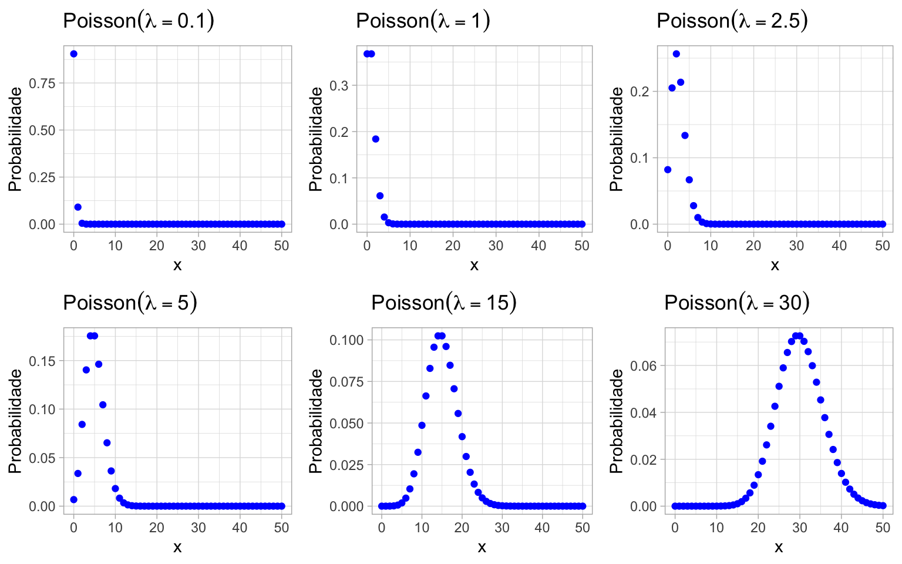
Figura 20.7: Função massa de probabilidade da Poisson para vários valores de lambda.
20.8.3 Função massa de probabilidade (simulação)
set.seed(1234)
lambdas <- c(0.1, 1, 2.5, 5, 15, 30)
n <- 1000
plots <- list()
for (i in seq_along(lambdas)) {
dados <- data.frame(X = rpois(n, lambda = lambdas[i]))
plots[[i]] <- ggplot(dados) +
geom_bar(aes(x = X, y = after_stat(prop)), fill = "lightblue") +
labs(title = TeX(paste0("$Poisson(\\lambda=", lambdas[i], ")$")),
x = "x", y = "Frequência relativa") +
theme_light()
}
grid.arrange(grobs = plots, nrow = 2, ncol = 3)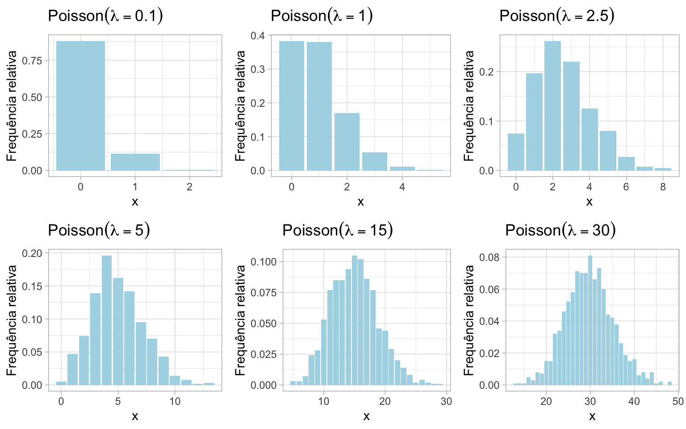
Figura 20.8: Amostras simuladas da Poisson para vários lambda.
20.8.4 Função de distribuição
lambda <- 5
x <- 0:15
y <- ppois(x, lambda = lambda)
plot(x, y, type = "s", lwd = 2, col = "blue",
main = "Função de distribuição da Poisson(5)",
xlab = "x", ylab = "F(x)")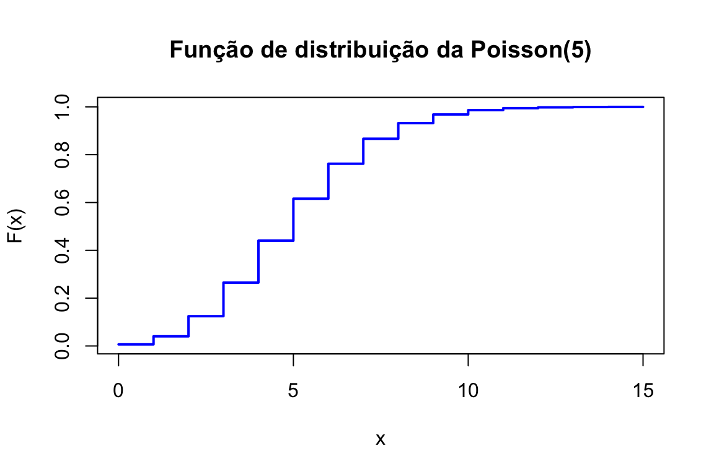
Figura 20.9: Função de distribuição da Poisson(5).
Exemplo. Numa região ocorrem, em média, 3 sismos por mês; o número mensal de sismos segue uma Poisson. Sendo \(X \sim \text{Poisson}(\lambda = 3)\):
dpois(2, lambda = 3) # P(X = 2)
## [1] 0.2240418
ppois(4, lambda = 3, lower.tail = FALSE) # P(X > 4)
## [1] 0.1847368Para a probabilidade de pelo menos 1 sismo em 2 semanas, usamos a aditividade: em 2 semanas (meio mês) o parâmetro é \(\lambda = 1{,}5\), e \(P(\tilde{X} \geq 1) = 1 - P(\tilde{X} = 0)\):
1 - dpois(0, lambda = 1.5) # P(X >= 1) em 2 semanas
## [1] 0.776869820.8.5 Exercícios
1. Uma fábrica produz, em média, 4 defeitos por dia (Poisson).
- Qual a probabilidade de exatamente 5 defeitos num dia?
- Qual a probabilidade de 3 ou menos defeitos num dia?
2. Simule o número de defeitos em 30 dias com rpois() e \(\lambda = 4\).
- Gere uma amostra de dimensão 30.
- Calcule a média e o desvio padrão da amostra.
- Compare com os valores teóricos.
3. Uma linha de apoio recebe, em média, 20 pedidos por cada 10 minutos (Poisson).
- Calcule a probabilidade de, em 10 minutos, chegarem exatamente 20 pedidos.
- Simule para \(n_1 = 5\), \(n_2 = 10\), \(n_3 = 100\) e \(n_4 = 1000\) repetições; para cada caso, determine a percentagem de vezes em que chegam exatamente 20 pedidos.
- Para cada amostra, calcule a média e a variância e compare com \(E(X)\) e \(V(X)\).
4. Uma loja recebe, em média, 12 clientes por hora (Poisson).
- Qual a probabilidade de receber no máximo 10 clientes numa hora?
- Qual a probabilidade de receber mais de 15?
- Simule 500 horas: (i) gere a amostra; (ii) calcule a frequência relativa de horas com \(\leq 10\) clientes e compare com (a).
- Calcule a média e o desvio padrão da amostra e compare com os teóricos (\(\lambda = 12\)).
- Compare graficamente a distribuição teórica com a frequência relativa observada.
5. Numa área de conservação, avistam-se em média 8 aves por hora (\(\lambda = 8\)).
- Simule o número de aves em 1000 horas.
- Construa a função de distribuição empírica (
ecdf()). - Compare-a com a função de distribuição teórica (
ppois()).
6. Com set.seed(543), gere 2400 observações de \(Y \sim \text{Poisson}(\lambda = 6)\).
- Faça um histograma de frequências relativas e sobreponha a distribuição de \(Y\).
- Com a função de distribuição empírica, estime \(P(Y > 5)\) e compare com o teórico.
7. Para \(\lambda = 5\), represente \(P(X = x)\) para \(x\) de 0 a 15.
- Use
dpois()para as probabilidades. - Faça um gráfico de barras.
8. Para \(\lambda = 50\), use a aproximação normal:
- Calcule \(P(X \geq 55)\) com a Poisson.
- Calcule a mesma probabilidade com a aproximação \(N(\mu = 50, \sigma^2 = 50)\).
- Compare os resultados.
9. O número de acidentes por dia numa autoestrada segue uma Poisson com \(\lambda = 2\).
- Simule 1000 amostras de dimensão 30.
- Calcule a média de cada amostra.
- Faça o histograma das médias amostrais e sobreponha a densidade de uma normal de média \(\mu = 2\) e desvio padrão \(\sigma = \sqrt{\lambda / n}\).
10. Num hospital, atendem-se em média 5 pacientes por hora (\(\lambda = 5\)). Com
set.seed(456):
- Simule 1000 amostras de dimensão 50, 100 e 1000.
- Para cada dimensão, calcule a média de cada amostra.
- Faça o histograma das médias e sobreponha a densidade normal de média \(\lambda\) e desvio padrão \(\sqrt{\lambda / n}\).
- Comente a aproximação à normal à medida que \(n\) cresce, relacionando com o Teorema do Limite Central.
20.9 Distribuição uniforme contínua
Definição. A variável contínua \(X\) tem distribuição uniforme no intervalo \((a, b)\), com \(a < b\), se a sua densidade for constante nesse intervalo: \[f_X(x) = \begin{cases} \frac{1}{b-a}, & a \leq x \leq b \\ 0, & \text{caso contrário} \end{cases}, \qquad F_X(x) = \begin{cases} 0, & x \leq a \\ \frac{x-a}{b-a}, & a < x < b \\ 1, & x \geq b \end{cases}\]
Notação e momentos. \(X \sim \text{Uniforme}(a, b)\), com \(E(X) = \dfrac{a+b}{2}\) e \(V(X) = \dfrac{(b-a)^2}{12}\).
20.9.1 Cálculo de probabilidades
Seja \(X \sim \text{Uniforme}(0, 1)\):
-
\(P(X \leq 0{,}5) \to\)
punif(0.5, min = 0, max = 1)\(= 0{,}5\) -
\(P(X > 0{,}5) \to\)
punif(0.5, min = 0, max = 1, lower.tail = FALSE)\(= 0{,}5\)
20.9.2 Densidade, simulação e comparação
x_vals <- seq(0, 1, length.out = 100)
plot(x_vals, dunif(x_vals, 0, 1), type = "l", col = "red", lwd = 2,
main = "Densidade da Uniforme(0, 1)", xlab = "x", ylab = "Densidade")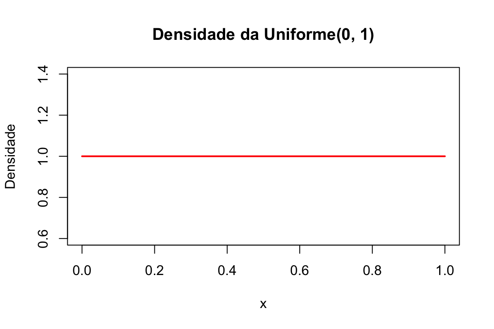
Figura 20.10: Densidade teórica da Uniforme(0, 1).
set.seed(123)
dados <- runif(10000, min = 0, max = 1)
hist(dados, probability = TRUE,
main = "Amostra da Uniforme(0, 1)",
xlab = "x", ylab = "Densidade",
col = "lightblue", border = "darkblue")
curve(dunif(x, 0, 1), add = TRUE, col = "red", lwd = 2)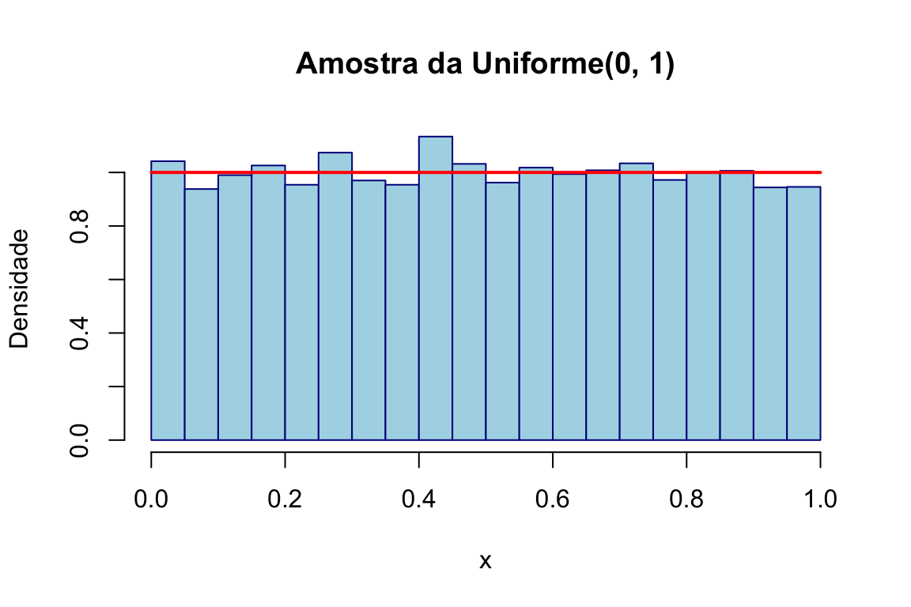
Figura 20.11: Histograma de uma amostra da Uniforme(0, 1) com a densidade teórica sobreposta.
x_vals <- seq(0, 1, length.out = 100)
plot(x_vals, punif(x_vals, 0, 1), type = "l", col = "blue", lwd = 2,
main = "Função de distribuição da Uniforme(0, 1)", xlab = "x", ylab = "F(x)")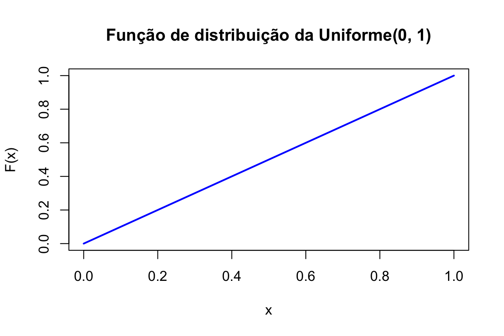
Figura 20.12: Função de distribuição da Uniforme(0, 1).
20.9.3 Exercícios
1. Simule 1000 valores de \(X \sim U(0, 1)\).
- Calcule a média e a variância dos valores simulados.
- Compare com os valores teóricos (\(E(X) = 0{,}5\), \(V(X) = 1/12\)).
2. Simule 500 valores de \(X \sim U(-3, 7)\).
- Faça o histograma dos valores.
- Sobreponha a densidade teórica.
3. O peso de uma barra de chocolate (que deveria pesar 100 g) tem distribuição uniforme em \([85, 105]\) gramas.
- Qual a probabilidade de uma barra pesar menos de 100 g?
- Simule para \(n_1 = 5\), \(n_2 = 10\), \(n_3 = 100\) e \(n_4 = 1000\); para cada caso, determine a percentagem de barras com peso inferior a 100 g.
4. Simule 10 000 valores de \(X \sim U(2, 8)\).
- Estime \(P(X > 5)\).
- Compare com o valor teórico (
punif()).
5. Seja \(Y \sim U(10, 20)\). Simule 1000 valores.
- Calcule a proporção empírica de valores em \([12, 15]\).
- Compare com o valor teórico (
punif()).
6. Simule 1000 amostras de dimensão 30 de \(X \sim U(-5, 5)\).
- Calcule a média de cada amostra.
- Faça o histograma das médias e sobreponha a densidade normal de média 0 e variância \(\frac{(5-(-5))^2}{12 \cdot n}\).
7. Seja \(Z = 3X + 2\), com \(X \sim U(0, 1)\). Simule 1000 valores de \(X\) e transforme-os em \(Z\).
- Calcule a média e a variância de \(Z\).
- Compare com \(E(Z) = 3E(X) + 2\) e \(V(Z) = 9V(X)\).
8. Uma fábrica produz itens com peso uniforme em \([100, 120]\) g. Simule 2000 itens.
- Calcule a proporção com peso inferior a 105 g.
- Compare a densidade empírica com a teórica.
9. Com set.seed(123), gere amostras de dimensão \(n = 100, 1000, 10\,000, 100\,000\)
de \(W \sim U(0, 1)\). Para cada uma, calcule a média amostral e compare com o valor
esperado teórico. Comente a convergência (Lei dos Grandes Números).
10. O tempo de entrega de um drone (minutos) segue \(X \sim U(10, 30)\). Com
set.seed(1430), gere 8000 amostras de dimensão \(n = 100\).
- Calcule a soma de cada amostra, \(S_n = \sum_{i=1}^n X_i\).
- Faça o histograma das somas e sobreponha uma normal de média \(nE(X)\) e desvio padrão \(\sqrt{n\,V(X)}\).
- Calcule a média de cada amostra, \(\bar{X}_n\).
- Faça o histograma das médias e sobreponha uma normal de média \(E(X)\) e desvio padrão \(\sqrt{V(X)/n}\).
11. Num data center, o número de servidores que falham por hora segue uma Poisson(\(\lambda = 4\)); o tempo de reparação de cada um segue \(U(2, 6)\) horas, e a energia gasta é \(E_i = T_i^2\). Simule 1000 horas e, em cada uma, calcule o consumo total \(E_{\text{total}} = \sum_{i=1}^N T_i^2\), onde \(N\) é o número de servidores falhados.
20.10 Distribuição exponencial
A distribuição exponencial modela tempos — a duração de um equipamento, o intervalo entre ocorrências consecutivas de um mesmo tipo de acontecimento (chegadas de clientes, avarias, colisões).
Definição. A variável contínua \(X\) tem distribuição exponencial de parâmetro \(\lambda > 0\) se \[f_X(x) = \begin{cases} \lambda e^{-\lambda x}, & x > 0 \\ 0, & x \leq 0 \end{cases}, \qquad F_X(x) = \begin{cases} 1 - e^{-\lambda x}, & x > 0 \\ 0, & x \leq 0 \end{cases}\]
Notação e momentos. \(X \sim \text{Exponencial}(\lambda)\), com \(E(X) = \dfrac{1}{\lambda}\) e \(V(X) = \dfrac{1}{\lambda^2}\).
A exponencial é a única distribuição contínua sem memória: \(P(X > s + t \mid X > s) = P(X > t)\). Por palavras: se um componente já durou \(s\) horas, a probabilidade de durar mais \(t\) é a mesma que teria em novo. É esta propriedade que a liga naturalmente ao processo de Poisson — os intervalos entre ocorrências de uma Poisson(\(\lambda\)) são exponenciais(\(\lambda\)).
20.10.1 Cálculo de probabilidades
Seja \(X \sim \text{Exponencial}(\lambda = 1)\):
-
\(P(X \leq 0{,}5) \to\)
pexp(0.5, rate = 1)\(= 0{,}3935\) -
\(P(X > 0{,}5) \to\)
pexp(0.5, rate = 1, lower.tail = FALSE)\(= 0{,}6065\)
20.10.2 Densidade, simulação e comparação
x_vals <- seq(0, 10, length.out = 100)
plot(x_vals, dexp(x_vals, rate = 1), type = "l", col = "red", lwd = 2,
main = "Densidade da Exponencial(1)", xlab = "x", ylab = "Densidade")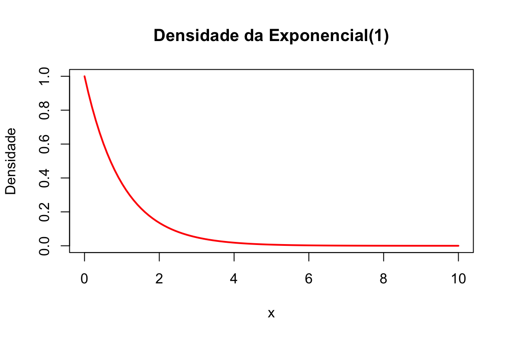
Figura 20.13: Densidade teórica da Exponencial(1).
set.seed(123)
dados <- rexp(10000, rate = 1)
hist(dados, probability = TRUE,
main = "Amostra da Exponencial(1)",
xlab = "x", ylab = "Densidade",
col = "lightblue", border = "darkblue")
curve(dexp(x, rate = 1), add = TRUE, col = "red", lwd = 2)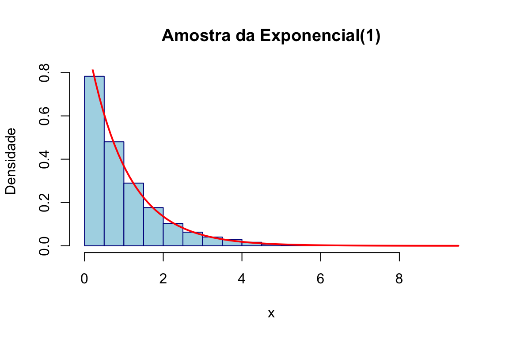
Figura 20.14: Histograma de uma amostra da Exponencial(1) com a densidade teórica sobreposta.
x_vals <- seq(0, 10, length.out = 100)
plot(x_vals, pexp(x_vals, rate = 1), type = "l", col = "red", lwd = 2,
main = "Função de distribuição da Exponencial(1)", xlab = "x", ylab = "F(x)")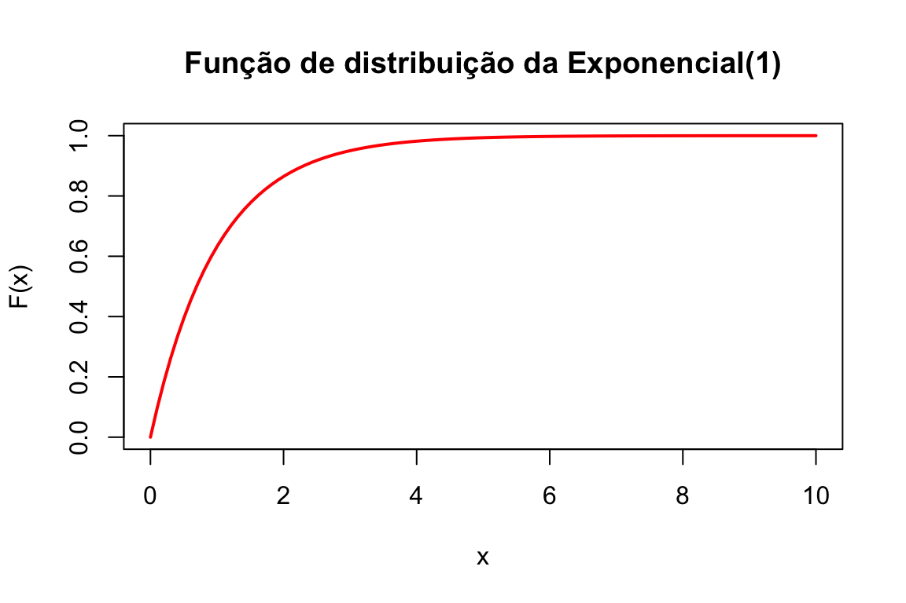
Figura 20.15: Função de distribuição da Exponencial(1).
20.10.3 Exercícios
1. Os intervalos entre chamadas numa central seguem uma exponencial com \(\lambda = 2\) (chamadas por minuto).
- Simule 1000 intervalos.
- Calcule o tempo médio e compare com \(1/\lambda\).
- Faça o histograma e sobreponha a densidade teórica.
2. Numa fila, o tempo entre chegadas segue uma exponencial com \(\lambda = 0{,}5\).
- Calcule \(P(\text{tempo} > 3)\) teoricamente.
- Simule 5000 intervalos e estime essa probabilidade.
- Compare.
3. O tempo de atendimento segue uma exponencial com \(\lambda = 0{,}25\) por minuto.
- Simule os tempos para \(n = 50\) clientes.
- Calcule o tempo total.
- Após 1000 simulações, faça o histograma do tempo total e sobreponha uma normal de média \(n/\lambda\) e desvio padrão \(\sqrt{n/\lambda^2}\).
4. Dois processos independentes têm tempos exponenciais com \(\lambda_1 = 3\) e \(\lambda_2 = 5\).
- Simule 1000 tempos de cada.
- Some os tempos.
- Faça o histograma da soma e discuta se ainda é exponencial.
5. Simule 5000 amostras de dimensão 30 de \(X \sim \text{Exponencial}(\lambda = 1{,}5)\).
- Calcule a média de cada amostra.
- Faça o histograma das médias e sobreponha uma normal de média \(1/\lambda\) e desvio padrão \(1/(\lambda\sqrt{n})\).
- Explique a ligação ao Teorema do Limite Central.
6. O tempo até à primeira avaria de uma máquina segue uma exponencial com \(\lambda = 0{,}1\).
- Simule o tempo de avaria de 10 000 máquinas.
- Estime a probabilidade de avariar em menos de 15 horas.
- Compare com o valor teórico (função de distribuição).
7. Numa estrada, os intervalos entre acidentes seguem uma exponencial com \(\lambda = 0{,}8\) (acidentes por hora).
- Simule os intervalos para 1000 horas.
- Estime a probabilidade de um intervalo ser inferior a 2 horas.
- Faça o histograma e compare com a densidade teórica.
8. Considere \(X_1 \sim \text{Exponencial}(0{,}5)\) e \(X_2 = 2X_1 + 1\).
- Simule 5000 pares \((X_1, X_2)\).
- Calcule a média e a variância de \(X_2\).
- Faça o gráfico de dispersão de \(X_1\) e \(X_2\) e comente a relação.
9. Os intervalos entre chamadas seguem uma exponencial com \(\lambda = 2\).
- Simule 5000 amostras de dimensão \(n = 5\).
- Para cada amostra, calcule a soma \(S = \sum_{i=1}^n X_i\).
- Compare o histograma de \(S\) com a densidade de uma \(\text{Gama}(k = 5, \theta = 1/\lambda)\).
- Compare a média e a variância empíricas de \(S\) com \(E(S) = k\theta\) e \(V(S) = k\theta^2\).
10. O tempo até à avaria de uma máquina segue uma exponencial com \(\lambda = 0{,}5\); observa-se o tempo até 10 avarias consecutivas.
- Simule 10 000 observações de \(S = \sum_{i=1}^{10} X_i\).
- Compare o histograma com a densidade de uma \(\text{Gama}(k = 10, \theta = 1/\lambda)\).
- Calcule \(P(S > 25)\) teoricamente (densidade gama) e compare com a estimativa empírica.
11. O tempo de uma tarefa é a soma de \(n = 7\) tempos exponenciais com \(\lambda = 3\).
- Simule 5000 valores de \(S = \sum_{i=1}^n X_i\).
- Ajuste-os a uma \(\text{Gama}(k = 7, \theta = 1/\lambda)\).
- Faça o histograma e compare com a densidade teórica.
- Estime o percentil 90 de \(S\) e compare com o teórico (
qgamma()equantile()).
20.11 Distribuição normal
A distribuição normal é a mais importante da estatística. Vejamos alguns exemplos, a começar pela normal padrão \(N(\mu = 0, \sigma = 1)\), que é o que as funções assumem por omissão:
dnorm(-1) # densidade em x = -1
## [1] 0.2419707
pnorm(-1) # P(X <= -1)
## [1] 0.1586553
qnorm(0.975) # x tal que P(X <= x) = 0.975
## [1] 1.959964
rnorm(10) # amostra de 10 valores (varia a cada execução)O valor de dnorm(-1) é a densidade da normal padrão no ponto \(x = -1\). A densidade da
normal \(N(\mu, \sigma)\) é
\[f(x) = \frac{1}{\sigma\sqrt{2\pi}}\, e^{-\frac{1}{2}\left(\frac{x - \mu}{\sigma}\right)^2},\]
pelo que o mesmo valor se obtém substituindo diretamente na fórmula:
mu <- 0; sigma <- 1; x <- -1
(1 / (sigma * sqrt(2 * pi))) * exp(-1/2 * ((x - mu) / sigma)^2)
## [1] 0.242As funções aceitam os argumentos mean e sd para outras médias e desvios padrão, que
podem ser passados de várias formas (por nome, abreviados ou por posição):
qnorm(0.975, mean = 100, sd = 8) # todas estas três chamadas...
qnorm(0.975, m = 100, s = 8) # ...são equivalentes
qnorm(0.975, 100, 8)
## [1] 115.6797No R, o segundo parâmetro da normal é o desvio padrão (\(\sigma\)), e não a variância
(\(\sigma^2\)). Assim, para \(X \sim N(\mu = 100, \sigma^2 = 64)\) escreve-se
sd = 8, e não sd = 64. Confundir os dois é um erro comum e silencioso — o R não
avisa, apenas devolve resultados errados.
Os cálculos de probabilidades que outrora exigiam tabelas fazem-se agora diretamente. Seja \(X \sim N(\mu = 100, \sigma = 10)\):
pnorm(95, 100, 10) # P(X < 95)
## [1] 0.3085375
pnorm(110, 100, 10) - pnorm(90, 100, 10) # P(90 < X < 110)
## [1] 0.6826895
pnorm(95, 100, 10, lower.tail = FALSE) # P(X > 95)
## [1] 0.691462520.11.1 Densidade e função de distribuição
par(mfrow = c(1, 2))
plot(dnorm, from = -3, to = 3, xlab = "x", ylab = "Densidade")
title("Densidade\nN(0, 1)")
plot(pnorm, from = -3, to = 3, xlab = "x", ylab = "F(x)")
title("Função de distribuição\nN(0, 1)")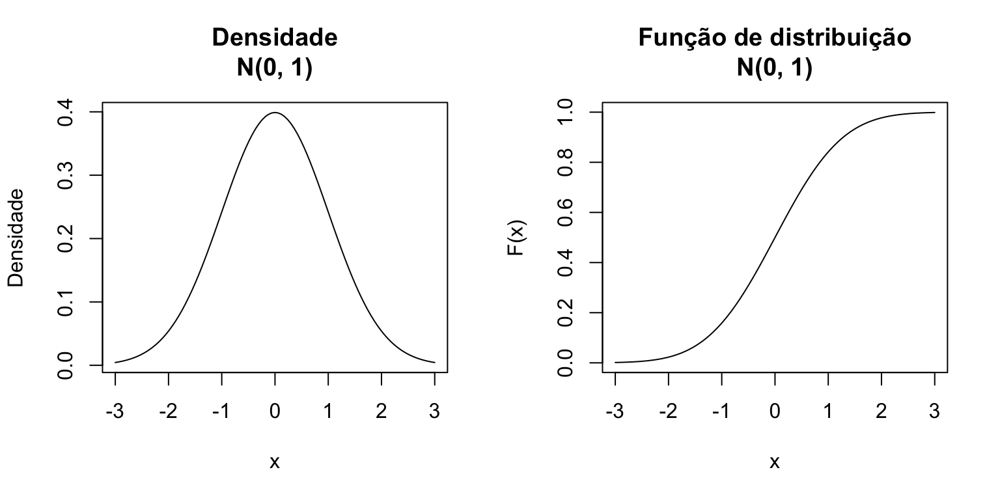
Figura 20.16: Densidade e função de distribuição da normal padrão.
O efeito dos parâmetros vê-se bem comparando várias normais: a média desloca a curva; o desvio padrão controla a sua largura:
plot(function(x) dnorm(x, 100, 8), 60, 140, ylab = "f(x)", xlab = "x")
plot(function(x) dnorm(x, 90, 8), 60, 140, add = TRUE, col = 2)
plot(function(x) dnorm(x, 100, 15), 60, 140, add = TRUE, col = 3)
legend("topright", fill = 1:3,
legend = c("N(100, 64)", "N(90, 64)", "N(100, 225)"))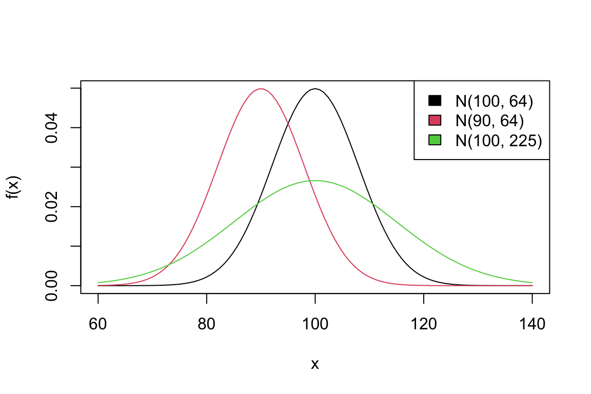
Figura 20.17: Três normais com médias e desvios padrão diferentes.
20.11.2 Exercícios
1. O peso de um mineral (g) segue uma normal de média \(\mu = 50\) e desvio padrão \(\sigma = 5\).
- Simule 1000 pesos.
- Compare a média e o desvio padrão simulados com os teóricos.
- Faça o histograma e sobreponha a densidade teórica.
2. Sejam \(X_1 \sim N(5, 2)\) e \(X_2 \sim N(10, 3)\) independentes.
- Simule 1000 pares.
- Calcule \(S = X_1 + X_2\).
- Faça o histograma de \(S\) e sobreponha uma normal de média \(\mu_1 + \mu_2\) e variância \(\sigma_1^2 + \sigma_2^2\).
3. Sejam \(X_1, X_2 \sim N(0, 1)\) independentes.
- Simule 5000 pares.
- Calcule \(Q = X_1^2 + X_2^2\).
- Compare o histograma de \(Q\) com a densidade de uma qui-quadrado com 2 graus de
liberdade (
dchisq()).
4. Estude a média de amostras de uma normal padrão \(N(0, 1)\).
- Extraia 1000 amostras de cada dimensão \(n = 5, 10, 30, 100\).
- Para cada amostra, calcule a média.
- Faça o histograma das médias e sobreponha a densidade de uma \(t\)-Student com \(n - 1\) graus de liberdade e a de uma normal de média 0 e variância \(1/n\).
- Comente como a \(t\)-Student se aproxima da normal quando \(n\) aumenta, e o efeito de \(n\) na variabilidade das médias.
5. Simule 1000 amostras de dimensão 20 de \(X \sim N(0, 1)\).
- Calcule a soma dos quadrados de cada amostra.
- Compare o histograma com a densidade de uma qui-quadrado com 20 graus de liberdade.
- Interprete os resultados.
6. Simule 5000 amostras de dimensão 30 de \(X \sim N(\mu = 10, \sigma = 4)\).
- Calcule a média de cada amostra.
- Faça o histograma das médias e sobreponha uma normal de média 10 e desvio padrão \(4/\sqrt{30}\).
- Explique a ligação ao Teorema do Limite Central.
7. Sejam \(X_1 \sim N(0, 1)\) e \(X_2 = 0{,}5 X_1 + Z\), com \(Z \sim N(0, 1)\) independente.
- Simule 5000 pares.
- Calcule \(S = X_1 + X_2\).
- Faça o histograma de \(S\).
8. Simule 1000 amostras de dimensão 10 de \(X \sim N(0, 1)\). Para cada uma, calcule a média \(\bar{X}\) e a variância \(S^2\), e construa \(T = \dfrac{\bar{X}}{S / \sqrt{n}}\). Compare o histograma de \(T\) com a densidade de uma \(t\)-Student com \(n - 1\) graus de liberdade.
9. Seja \(X \sim N(0, 1)\). Simule 1000 amostras de dimensão \(n = 10\). Para cada uma:
- Calcule a variância amostral \(S^2\).
- Construa a estatística \(Q = \dfrac{(n-1)S^2}{\sigma^2}\), com \(\sigma^2 = 1\).
- Compare o histograma de \(Q\) com a densidade de uma \(\chi^2(n-1)\).
- Compare a média e a variância empíricas de \(Q\) com \(E(Q) = n - 1\) e \(V(Q) = 2(n-1)\).
Conhecidas as distribuições e as funções rnome que geram amostras diretamente, uma
pergunta natural impõe-se: e quando a distribuição de que precisamos não tem uma função
r pronta no R? É esse o problema que os próximos capítulos resolvem, a começar pelo
método da transformada inversa.